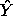
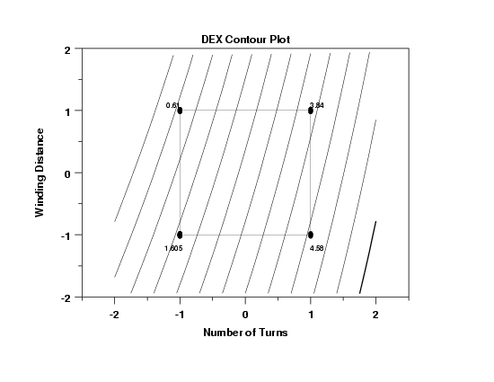

5.
Process Improvement
5.6.
Case Studies
5.6.1.
Eddy Current Probe Sensitivity Case Study
5.6.1.10.
|
Using the Fitted Model
|
|
|
Model Provides Additional Insight
|
Although deriving the fitted model was not the primary purpose
of the study, it does have two benefits in terms of additional
insight:
- Global prediction
- Global determination of best settings
|
|
Global Prediction
|
How does one predict the response at points other than those
used in the experiment? The prediction equation yields good
results at the 8 combinations of coded -1 and +1 values for
the three factors:
- X1 = Number of turns = 90 and 180
- X2 = Winding distance = .38 and 1.14
- X3 = Wire guage = 40 and 48
What, however, would one expect the detector to yield at target
settings of, say,
- Number of turns = 150
- Winding distance = .50
- Wire guage = 47
Based on the fitted equation, we first translate the target values
into coded target values as follows:
coded target = -1 + 2*(target-low)/(high-low)
Hence the coded target values are
- X1 = -1 + 2*(150-90)/(180-90) = 0.333333
- X2 = -1 + 2*(.50-.38)/(1.14-.38) = -0.684211
- X3 = -1 + 2*(47-40)/(48-40) = 0.75000
That is, on the -1 to +1 scale we have
(X1,X2,X3) = (.333333,-.684211,.750000)
Inserting these coded values into the fitted equation yields,
as desired, a predicted value of

= 2.65875 + 0.5(3.10250*(.333333) - 0.86750*(-.684211))
= 3.47261
The above procedure can be carried out for any values of turns,
distance, and guage. This is subject to the usual cautions that
equations that are good near the data point vertices may not
necessarily be good everywhere in 3-space. Interpolation is a
bit safer than extrapolation, but it is not guaranteed of course.
One would feel more comfortable about interpolation (as in our
example) if additional data had been collected at the center
points and the center point data turned out to be in good agreement
with predicted values at the center point based on the fitted
model. In our case, we had no such data and so the sobering
truth is that the use of the equation is assuming something in
which the data set as given is not capable of proving one way or
the other. Given that assumption, we have demonstrated how one
may cautiously but insightfully generate predicted values which
go well beyond our limited original data set of 8 points.
|
|
Global Determination of Best Settings
|
Given the existence of a prediction equation, what additional
information does that convey to us in terms of "best settings"
when such best settings may lie outside of the domain
in which the experiment was carried out? In particular,
suppose the truth of the matter is that the nature's optimal
settings of
(number of turns, distance, guage)
is in fact outside the test region:
|
X1 = Number of wire turns :
|
90 180
|
|
X2 = Wire winding distance:
|
.38 1.14
|
|
X3 = Wire guage:
|
40 48
|
|
|
DEX Contour Plot
|
Can we detect such an extra-domain optimal point? The answer to
this is a cautious yes and clues to such are most easily arrived
at via
dex
contour plots. In particular, the contour plot of choice
involves the two dominant factors, X1 and X2 in our case study,
in the analysis. The dex contour plot of X1 and X2 follows.

The maximum value of the response variable (eddy current) corresponds
to X1 (number of turns) equal to +1 and X2 (winding distance) equal to
-1. The thickened line in the contour plot corresponds to the direction
that maximizes the response variable.
|